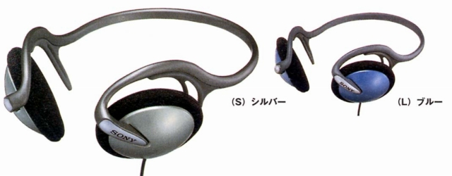

MDR-G61

■価格 3,300円■型式 オープンエアダイナミック型■振動板 30�oドーム型■インピーダンス 24Ω■再生周波数帯域 14-24,000Hz■許容入力 100mW■感度 105ｄB/mW■コード 0.5ｍOFCリッツ線 マイクロプラグ■重量 58g（コード含まず）■発売 1997年■販売終了 1998年■備考 1m L型ステレオミニプラグの延長コード付属
ソニーのインデックスへ